三星摺疊屏一月體驗：還行

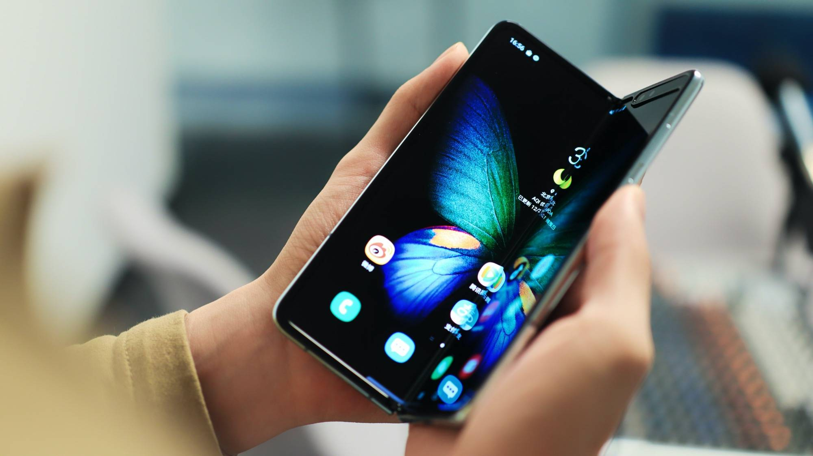 有一說一，四月份我第一次上手三星的摺疊屏手機 Galaxy Fold 的時候，開箱時候的興奮程度絕對不亞於王自如老師在自己的測評視頻中表現的那樣。我當天在上海出差，甚至讓即將要來上海出差的同事直接人肉把手機給我拿到了上海，用一晚上錄了開箱體驗視頻。 但至於爲什麼我當時的視頻沒有王自如老師那麼興奮，因爲我簡單上手當時的 Galaxy Fold 後，冷靜下來了。
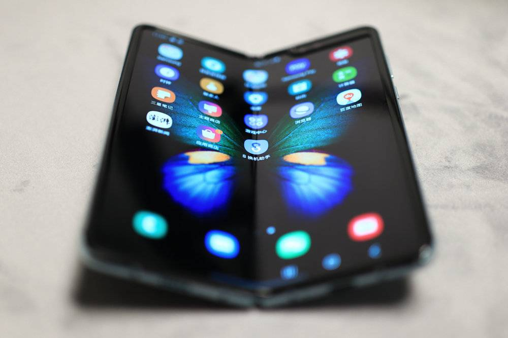 當時的 Galaxy Fold 和現在看上去幾乎完全一樣，後來發生了什麼大家都清楚了，直到前段時間，三星正式上市了 Galaxy Fold，做了一些改進。 4 月份我拿到的 Galaxy Fold 有一些小問題，比如轉軸不夠緊，開合過程中有那種松垮的感覺，螢幕上也有一個明顯的壞點。但我也認識不少其他拿到 Galaxy Fold 測評機的媒體，發現我遇到的問題其實是個例，當然，也不是其他人拿到的機器就是完美的，有的媒體朋友也遇到了另外的一些小問題。 但當前段時間重新拿到已經上市的消費者版本的 Galaxy Fold，單就機身和螢幕而言，已經是一款非常完美的機器了。
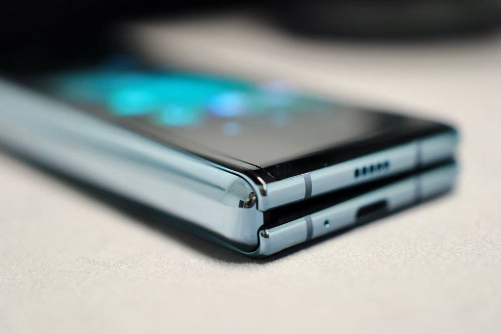 轉軸比之前更加緊湊，開合過程也不會有任何卡頓，合上後的機身也一體感更強，不會像我四月份拿到的那款合上後會出現「稍微有點咣當」的情況，摺疊螢幕也幾乎沒有摺痕，之前容易讓人誤解的「保護膜」也進行了重新設計，內屏的一體感也非常好了，不會再次讓人產生誤解把螢幕當保護膜撕掉。 於是我把我所有數據都導到了 Galaxy Fold 里，當做主力機用了三周左右的時間，準備和你談談摺疊屏，現在該不該買。 首先市面已經發售的摺疊屏，熱度最高的是三星 Galaxy Fold 和華爲 Mate X，兩種不同的方案，三星是內折，華爲是外折。
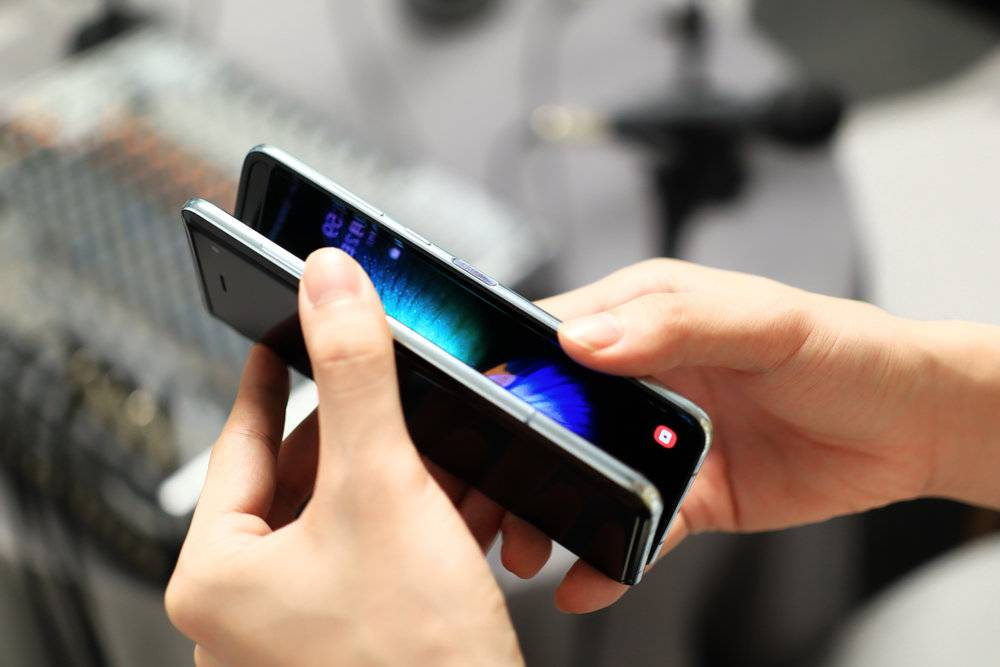 每個人對不同的摺疊方案都有不同的看法，因爲 Galaxy Fold 是內折，所以就必須在外面還放一個小尺寸螢幕，而華爲則不用。 我前段時間簡單上手過華爲 Mate X，沒長時間體驗，但從我個人的角度來說，如果現在選擇一款摺疊屏手機，我還是會選擇三星 Galaxy Fold，但這個選擇又有點讓人糾結。 在聊選擇這事兒以前，我們應該科普一些概念。正常來說，我們現在大多數不能摺疊的手機螢幕是玻璃材質的。但玻璃有個問題，就是硬度夠高，但韌度不行，也就是不容易被劃傷，但容易被摔碎，所以現在很多手機廠商都會選擇康寧的玻璃來做手機螢幕，因爲康寧的玻璃硬度和韌度都還不錯。
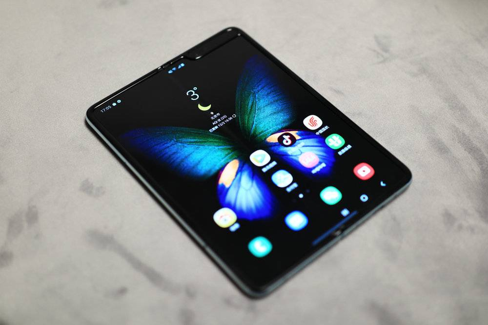 但是如果摺疊的話，就不能用玻璃了，玻璃韌性再好也不能摺疊，所以無論是三星的 Galaxy Fold 還是華爲的 Mate X，就都得用「塑料」螢幕，但螢幕能摺疊了，韌性好了，硬度就低了，所以就會非常不耐刮。 三星是內折屏，相當於機身在不用手機的時候把螢幕保護起來了，就不太容易出現太多劃痕。而華爲 Mate X 是外折屏，所以螢幕日常就是暴露在外面的， 雖然有層貼膜，但和身邊用華爲 Mate X 的朋友交流了一下，貼膜上劃痕還是非常明顯的，而且貼膜很容易翹起，迫不得已得用華爲官方提供的每個月免費換一次貼膜的服務。 就是這個問題，才讓我覺得， 如果說在摺疊屏手機中選擇一個，我還是會選擇三星 Galaxy Fold。但是，這還真不是三星這玩意兒就是個完美產品了。
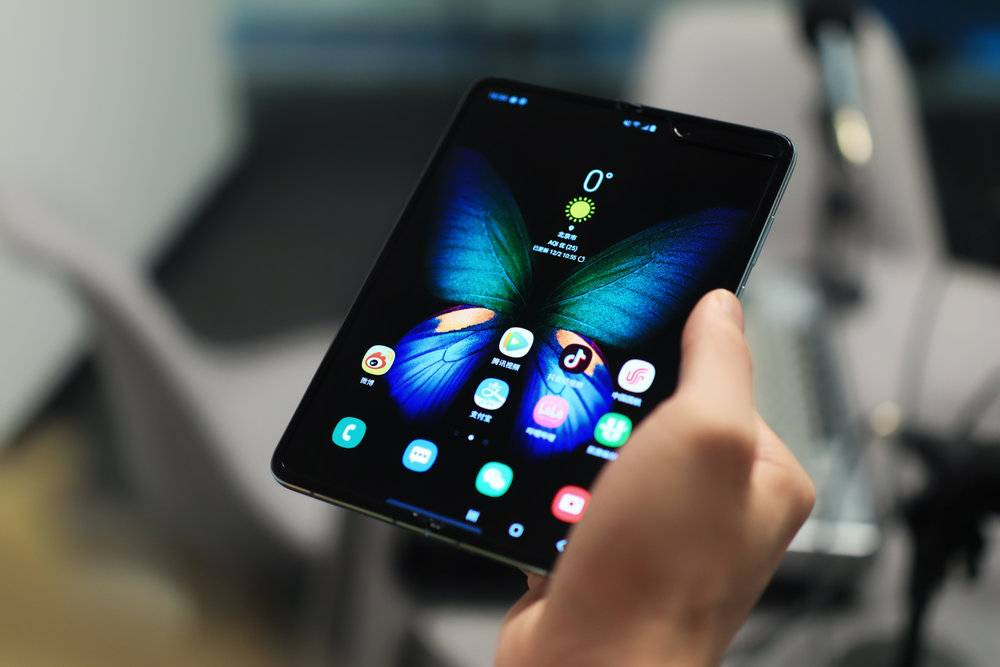 在 4 月份發布 Galaxy Fold 上手後，評論區反饋說看起來太厚太沉了，但實際上，263g 的重量其實是完全可以被接受的，而展開後保護框厚度的 7.5mm，其實是比目前大部分用雙面玻璃的智慧型手機要薄一些，再加上這個小平板的尺寸，其實體感並不會感覺有多厚重。 展開後螢幕側上方的劉海其實也並不太會影響到視覺觀感，畢竟大螢幕帶來的視覺衝擊力，是要遠比一小塊劉海要強很多的，無論是看文章，還是視頻，亦或者是玩遊戲，顯示面積都更大了，確實觀看體驗強了很多，更何況這是一塊能摺疊起來的螢幕，用完就直接折起來體積也並不大。
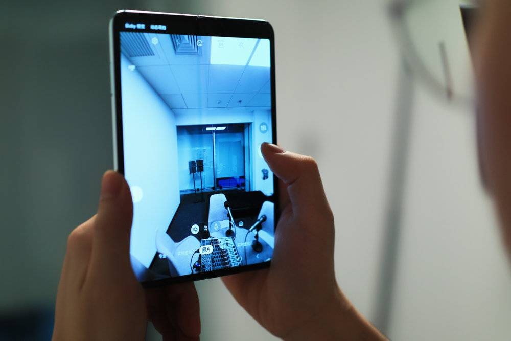 並且 Galaxy Fold 用的是三星旗艦機的配置，無論是性能配置還是拍照能力，都是目前在售智慧型手機中一流的，連雙向快充這種功能也被保留了下來，本質上，摺疊沒有影響到這款手機任何的基礎功能。 但用了一個月，對不起，我對這款手機的評價只能是「還行」，拋開這款手機相當精緻的做工和設計，以及相當高售價和獨特玩法帶來的社交屬性，在使用層面，摺疊屏手機，還真不一定能讓你有多爽。 首先是機身正面的小屏，尺寸其實不小，但就是因爲機身太窄，所以其實看通知還好，但要真指望在上面打字回點信息，即使連用 9 宮格輸入法都會有點小，更別說 26 鍵了。
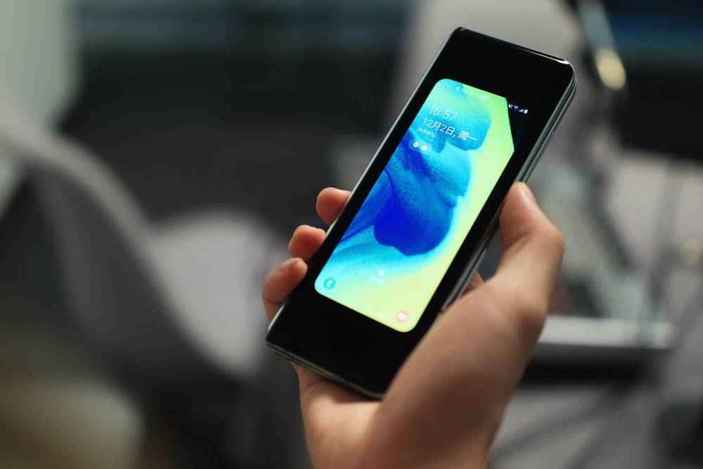 另外即使是已經正式發布一個多月，app 對 Galaxy Fold 的摺疊機制的適配還是不夠好，大部分 app 在大螢幕上只是拉抻，並沒有顯示更多內容，而按照三星的本意，所有的 app 都應該是在合上螢幕後，會自動切換到小螢幕上，可以繼續使用，體驗不會出現斷層。但現在的情況是，很多你日常常用的 app，在切換螢幕的時候，還是不太行。
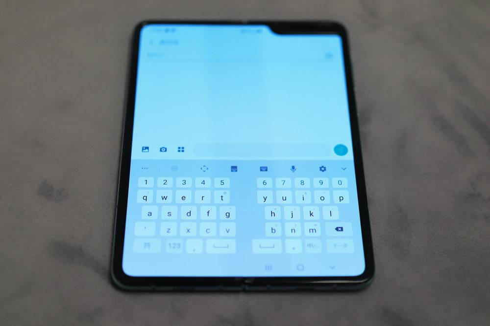 還有一點問題是展開螢幕後的打字體驗，如果你之前試過在 iPad Mini 上打字，肯定還是非常清楚在大尺寸螢幕上打字還是差點意思，三星 Galaxy Fold 展開後的打字體驗確實還是需要好好適應下，雖然軟體層面做了相應適配，官方鍵盤可以中間斷開，讓兩邊的拇指不用太費力去夠中間的按鍵，用戶也可以自定義鍵盤的大小和中間斷開的間隔，但我在 Galaxy Fold 上打字的速度，確實是降低了。有點惱火。
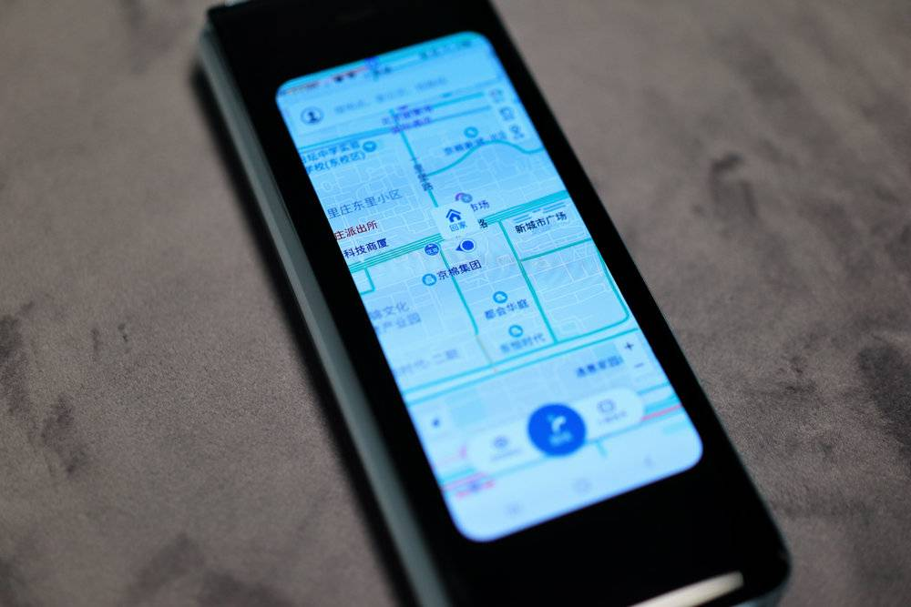 另外你在購買前還需要考慮一點的是，你日常使用自己的手機時候，是雙手使用場景比較多還是單手使用場景比較多，如果是單手用手機比較多，Galaxy Fold 可能會讓你體驗比較割裂，因爲一方面是你確實很難單手把螢幕翻開，另一方面是在大尺寸螢幕上很難單手操作，而小螢幕又過於細長，點擊又費勁。但如果你日常使用場景是單手比較多，Galaxy Fold 你就完全可以當做買平板送了個手機，能省不少事兒。 但是，即便這麼多目前體驗上的小問題，我還是很想要讚揚下三星在手機創新上給整個行業做的貢獻。畢竟如今智慧型手機都在追求高屏占比和大尺寸螢幕，就是因爲螢幕是智慧型手機最主要的信息載體，而摺疊，其實是把整個螢幕尺寸的拓展，用另一個維度的方式去解決問題。
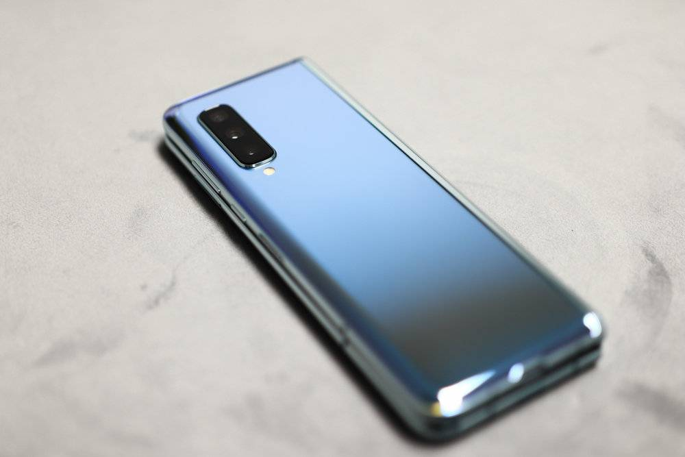 我在用 Galaxy Fold 的一個月里，基本上不會像我之前那樣，主力機用 iPhone 還隨身包里背一個 iPad Pro。Galaxy Fold 雖然展開後螢幕尺寸並不是特別大，但是單就看視頻這一個體驗上，還是碾壓目前所有的智慧型手機的。 更何況，即使單純當做手機來用，Galaxy Fold 的螢幕素質並沒有受到摺疊的耽誤，機能也沒被耽誤，相機能力同樣沒被耽誤，這其實是很重要的，畢竟爲了某種創新去耽誤另外一些體驗，還是挺讓人頭疼的事情。
Galaxy Fold 還能更好嗎？肯定是可以的，對於已經購買的消費者來說，隨著時間的推移，app 對於摺疊的適配肯定會越來越好，所有網友所在意的「摺痕」，在你真正拿到手機後也會發現，點亮螢幕，其實根本就注意不到摺痕。對於還沒買 Galaxy Fold 用戶，其實你可以再等一等，嘗鮮往往都是要付出更高的價格，還有一些體驗不夠好的風險，以三星打造手機硬體的能力，我們完全有理由相信，在明年，再不濟是後年，三星可以拿出更好的摺疊屏方案。但說真的，除了更堅固的螢幕，我確實也想不出來 Galaxy Fold 這款設備還能在什麼地方有所提升，因爲這已經是一款相當不錯的摺疊屏手機了。 你看，這就很矛盾了，一方面我自己覺得這款產品在硬體和軟體層面已經完成度極高，已經是一款相當不錯的手機，但用了一個月，我努力適應過後還是會覺得有些彆扭。 也許，在智慧型手機時代，摺疊屏出現的時間節點，就像是功能機時代快結束，智能機手機快普及前的那段時間，各家廠商都在瘋狂創新，琢磨究竟該怎麼做出好產品的時間段，你能說那段時間的產品就一定是好的嗎？那肯定不能，但一定是好玩的。但也就是這一個個好玩的產品去不斷在技術和市場上進行嘗試，消費者也才能有機會在之後用上真正「革命性」的新品。返回搜狐，查看更多